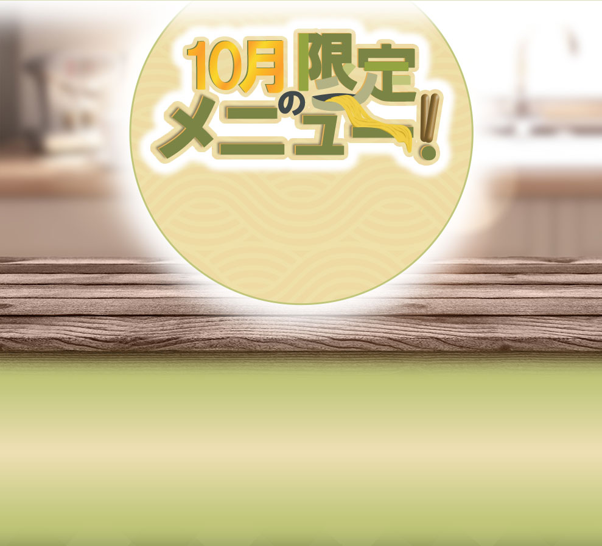
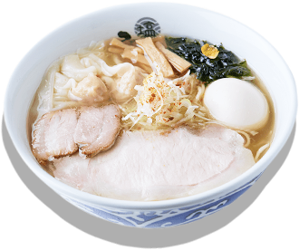
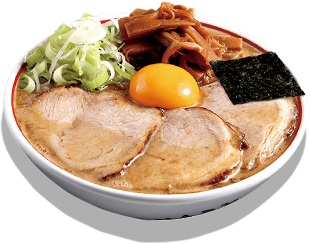
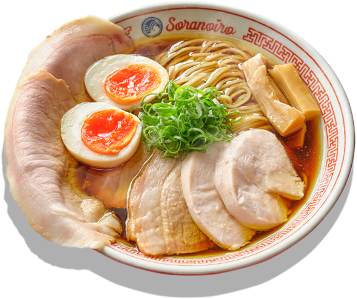
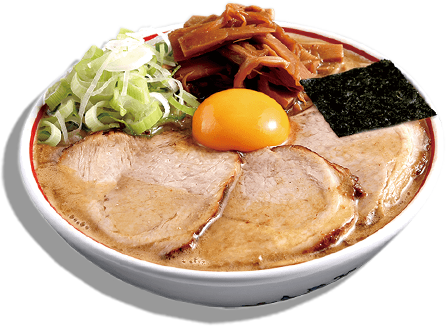
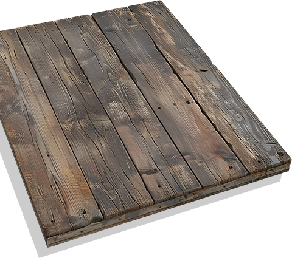
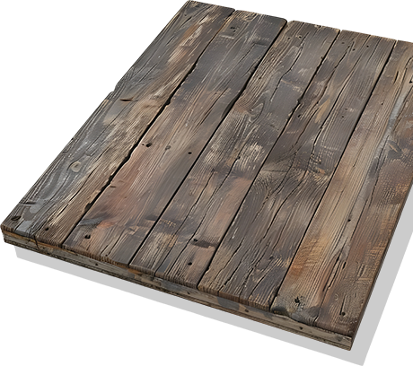
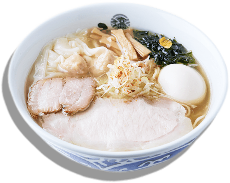
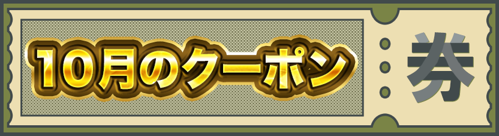

濃厚魚介の名店「玉」による煮干しらーめん専門店。鶏の旨味が詰まった濃厚スープに数種の煮干しを合わせて作る至福の一杯は新たな東京名物です。
日本最大級の地鶏『天草大王』を使った醤油らーめんの他、貝出汁塩ラーメン、キノコベジソバも人気。近年の食の多様化に対応した、グルテンフリーやビーガンのメニューもご用意。



北海道産小麦の風味豊かな麺と、厳選食材からコクと旨味を引き出したスープは絶品。
